3.1 Catalogue of Population Norms
Annexes 1 and 2 capture a full set of EQ-5D population norm tables that were estimated for each country. The tables contain information on the size of the study, EQ VAS ratings and proportion of reported problems on each of the EQ-5D dimensions, as well as EQ-5D index values.
Annex 1 includes surveys that were based on national representative populations. The survey for England is included among the national surveys, as it is expected to be referenced more widely in studies performed in the United Kingdom. Annex 2 includes surveys that were based on general populations but were limited to specific regions of the particular country. There are three examples where both national and regional surveys are available in a single country, including Spain, Sweden, and the United Kingdom. The choice between using the national versus the regional dataset as a reference group may well depend on the objectives and audiences of future studies. It is important to note that in all of these three countries, the regional surveys were conducted more recently. Both the survey for England and the Stockholm county survey capture a large proportion of the population in England and Sweden. The results of the English survey were similar to the UK survey, conducted 17 years previously, however no EQ VAS data were collected in the English survey. The new Stockholm county survey results show consistently worse EQ-5D population norms in all EQ-5D variables and in all age groups. The two Spanish regional surveys also generally show worse EQ-5D population norms compared to the earlier national Spanish survey, although this is not consistently seen in all age groups.
All surveys included the EQ VAS ratings, with the exception of the Finnish and English surveys. All surveys included EQ-5D dimensions. The EQ-5D index population norms based on the European value set were calculated for all surveys. Country-specific TTO-based value sets were available for 13 countries to calculate EQ-5D index population norms. Country-specific VAS-based value sets were available for 10 countries to calculate EQ-5D index population norms. Results for sub-groups with less than 15 observations were indicated as not being available. Key results are discussed in the sections below, while all detailed tables are included in the annexes.
The population norm tables in the annexes reflect granular reporting of descriptive statistics in order to provide flexibility for researchers when using the EQ-5D norms for comparative purposes. The population norm tables can be used as reference data to compare profiles for patients with specific conditions with data for the average person in the general population in a similar age and/or gender group.
3.2 EQ VAS Population Norms
For illustration purposes, the mean EQ VAS data from all population surveys of the EuroQol archive were pooled and are presented in Fig. 3.1. As can be seen, the mean EQ VAS ratings decrease with increasing age. Also, men of all age groups reported higher EQ VAS ratings than women.
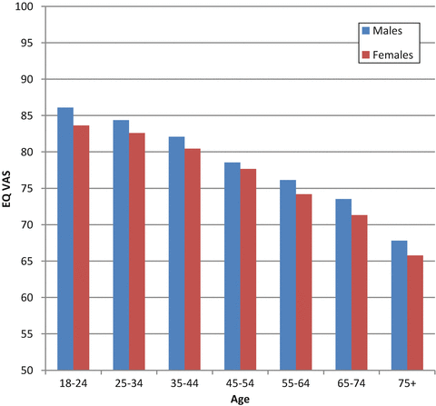
Fig. 3.1
Illustration of mean population EQ VAS ratings
Table 3.1 shows results for self-rated EQ VAS scores for each country by age group and for the total population. It is important to note that while results in each age group may be compared across countries, the total population scores cannot be compared directly as they reflect the unique age structure within each country.
Table 3.1
EQ VAS ratings by age group and total population (not standardized)
18–24 | 25–34 | 35–44 | 45–54 | 55–64 | 65–74 | 75+ | Total | |
|---|---|---|---|---|---|---|---|---|
Argentina | 82.0 | 79.4 | 77.2 | 74.4 | 69.5 | 67.9 | 62.2 | 75.3 |
Belgium | 84.0 | 82.0 | 80.2 | 77.2 | 74.2 | 71.3 | 69.4 | 77.6 |
China | 89.1 | 85.7 | 82.7 | 79.4 | 76.5 | 72.2 | 69.4 | 80.4 |
Denmark | 86.2 | 87.9 | 85.8 | 83.0 | 81.6 | 78.3 | 76.2 | 83.7 |
France | 83.9 | 83.2 | 78.7 | 77.9 | 74.2 | 68.1 | 61.5 | 76.8 |
Germany | 85.3 | 84.0 | 82.5 | 78.5 | 72.9 | 68.6 | 60.5 | 77.3 |
Greece | 83.5 | 85.8 | 84.7 | 78.0 | 69.9 | 67.0 | 56.0 | 79.0 |
Hungary | 83.3 | 81.1 | 75.3 | 69.1 | 63.7 | 59.0 | 53.9 | 71.1 |
Italy | 87.5 | 83.9 | 81.4 | 77.0 | 74.0 | 67.8 | 60.1 | 77.1 |
Korea | 78.9 | 80.7 | 80.6 | 80.4 | 76.9 | 76.5 | – | 79.5 |
Netherlands | 85.7 | 84.6 | 83.7 | 81.0 | 80.7 | 78.0 | 72.9 | 82.0 |
New Zealand | 82.4 | 82.3 | 82.5 | 82.2 | 81.6 | 79.6 | 70.8 | 80.8 |
Slovenia | 85.4 | 82.6 | 80.8 | 75.5 | 67.9 | 65.3 | 55.4 | 76.4 |
Spain | 82.0 | 80.1 | 76.7 | 73.6 | 72.0 | 69.0 | 62.2 | 75.0 |
Sweden | 84.3 | 86.2 | 86.2 | 83.7 | 79.0 | 81.5 | 71.8 | 83.3 |
Thailand | 82.9 | 80.9 | 80.1 | 78.3 | 79.3 | 76.1 | 72.3 | 79.4 |
United Kingdom | 86.5 | 86.8 | 86.6 | 82.0 | 81.7 | 77.3 | 73.8 | 82.8 |
United States | 86.2 | 83.5 | 81.8 | 79.2 | 76.9 | 75.1 | 68.5 | 80.0 |
Figure 3.2 graphically presents self-rated EQ VAS scores by age group for each country. As can be seen, the mean EQ VAS ratings decrease with increasing age, although countries vary according to how younger age groups rate their health and how the slope of people’s self-rated health declines over the decades of their life. Korean data show a somewhat outlier pattern in people reporting their health within a narrow EQ VAS range. This was also observed to some extent in the New Zealand data.
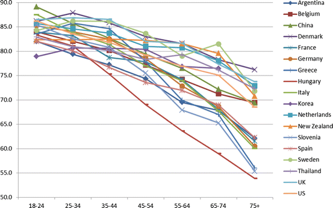
Fig. 3.2
EQ VAS ratings by age group
For easier interpretation, Figs. 3.3 and 3.4 present self-rated EQ VAS scores separately by age group for two sets of countries. The first graph shows the ‘upper values’ (mainly viewed from the perspective of older people), and the second the ‘lower values’. Accordingly, a difference in the lower end of the Y-axis on the first figure should be noted.
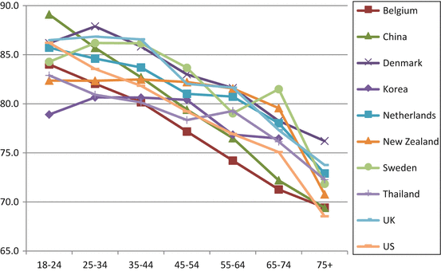
Fig. 3.3
EQ VAS ratings by age group (countries with ‘upper values’)
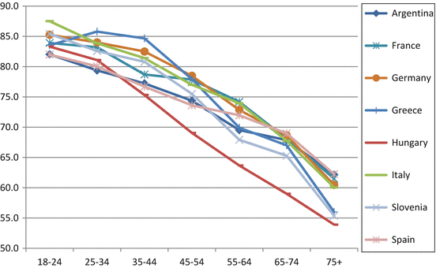
Fig. 3.4
EQ VAS ratings by age group (countries with ‘lower values’)
Table 3.2 shows results for self-rated EQ VAS scores for each regional survey by age group and for the total population. As seen across the national surveys, the mean EQ VAS ratings decrease with increasing age in the regional surveys as well.
Table 3.2
EQ VAS ratings by age group and total population (not standardized) from regional surveys
18–24 | 25–34 | 35–44 | 45–54 | 55–64 | 65–74 | 75+ | Total | |
|---|---|---|---|---|---|---|---|---|
Armenia (5 regions) | 87.8 | 78.4 | 68.0 | 62.3 | 55.3 | 50.1 | 43.8 | 65.7 |
Canada (Alberta) | 81.6 | 80.5 | 78.7 | 75.7 | 77.1 | 77.1 | 75.3 | 78.3 |
Japan (3 prefectures) | 78.9 | 77.9 | 79.3 | 79.8 | 76.8 | 76.6 | 67.7 | 77.8 |
Spain – Canary Islands | 83.3 | 79.7 | 77.4 | 71.6 | 66.1 | 64.4 | 56.4 | 71.7 |
Spain – Catalunya | 82.4 | 79.3 | 77.5 | 72.7 | 67.6 | 63.6 | 54.4 | 72.3 |
Sweden – Stockholm county | 81.7 | 81.5 | 80.7 | 79.2 | 78.1 | 75.9 | 68.5 | 78.7 |
Zimbabwe – Harare district | 81.8 | 79.8 | 76.6 | 75.1 | 70.5 | 61.5 | – | 79.8 |
3.3 EQ-5D Dimensions
As the data on the 5 EQ-5D dimensions are not continuous but ordinal, the information is presented as the proportions of the population reporting level 1 (no problems), level 2 (some problems) and level 3 (extreme problems) per dimension, by age group and gender. Because the number of people reporting severe problems is usually very small in general population surveys, the sum of the proportions of reported level 2 and level 3 problems is sometimes used. This essentially changes the 3-level EQ-5D dimensions into 2-level dimensions, using categories ‘no problems’ and ‘problems’.
In a pooled dataset of surveys, Fig. 3.5 illustrates the sum of the proportion of reported level 2 and level 3 problems for each of the 5 EQ-5D dimensions for three distinct age groups. As can be seen from the figure, the proportion of problems increased with age on all dimensions. Problems with mobility increased the most with increasing age, whereas problems with anxiety/depression increased the least. For every age group the proportion of problems with pain/discomfort was higher than the proportion of problems on the other dimensions.
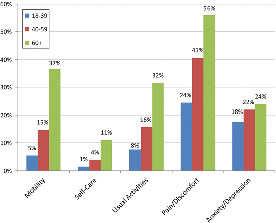
Fig. 3.5
EQ-5D profile of the population (% reporting any problem)
Table 3.3 summarizes results for reported problems along the five dimensions by country. These results reflect the total population scores and cannot be compared directly to each other as they reflect the unique age structure within each country.
Table 3.3
Reported problems by 5 dimensions (% of any problem)
Mobility | Self-care | Usual activities | Pain/discomfort | Anxiety/depression | |
|---|---|---|---|---|---|
Argentina | 10.8 | 2.9 | 8.0 | 30.9 | 22.8 |
Belgium | 12.6 | 4.0 | 12.4 | 28.5 | 6.6 |
China | 5.1 | 2.8 | 5.2 | 10.7 | 8.7 |
Denmark | 10.7 | 2.5 | 17.9 | 36.7 | 16.1 |
England | 19.4 | 5.6 | 17.0 | 35.3 | 19.3 |
Finland | 26.3 | 8.6 | 21.0 | 47.8 | 13.9 |
France | 13.4 | 4.0 | 10.0 | 35.9 | 15.0 |
Germany | 15.9 | 2.7 | 9.9 | 27.6 | 4.3 |
Greece | 13.3 | 5.7 | 10.5 | 16.8 | 10.7 |
Hungary | 19.6 | 6.5 | 14.8 | 39.2 | 35.2 |
Italy | 10.4 | 3.3 | 9.4 | 26.6 | 8.7 |
Korea | 5.9 | 0.8 | 4.1 | 21.3 | 17.4 |
Netherlands | 11.5 | 3.4 | 13.5 | 34.2 | 3.5 |
New Zealand | 20.0 | 4.4 | 21.5 | 40.8 | 21.2 |
Slovenia | 29.8 | 14.0 | 32.9 | 47.2 | 36.4 |
Spain | 13.7 | 4.1 | 11.7 | 22.9 | 7.8 |
Sweden | 8.6 | 1.5 | 7.9 | 40.8 | 26.0 |
Thailand | 26.3 | 8.7 | 22.7 | 65.0 | 47.4 |
United Kingdom | 18.4 | 4.3 | 16.3 | 33.0 | 21.0 |
United States | 18.5 | 3.7 | 17.9 | 48.3 | 23.2 |
Figure 3.6 graphically presents reported problems by dimension for each country. As can be seen, problems with pain/discomfort were generally the most prevalent, while problems with self-care were the least prevalent among the 5 dimensions.
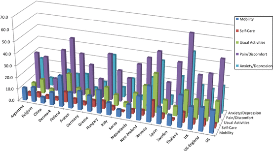
Fig. 3.6
EQ-5D profile by country
Figures 3.7, 3.8, 3.9, 3.10 and 3.11 show reported problems for each dimension separately across all countries. Variability in reported problems for each dimension is also present among countries, with percentages of reported problem ranges of 5.1–29.8 % for mobility; 0.8–14.0 % for self-care; 4.1–32.9 % for usual activities; 10.7–65.0 % for pain/discomfort; and 3.5–47.4 % for anxiety/depression.
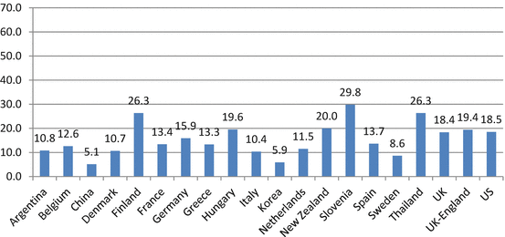
Fig. 3.7
Reported problems with mobility (% of any problem)
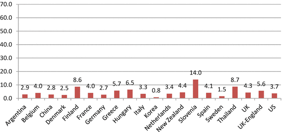
Fig. 3.8
Reported problems with self-care (% of any problem)
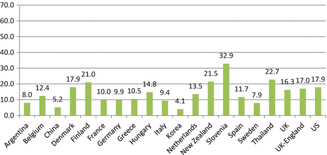
Fig. 3.9
Reported problems with usual activities (% of any problem)
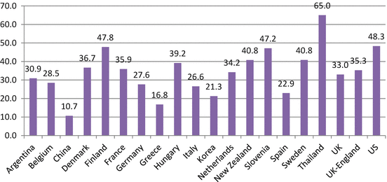
Fig. 3.10
Reported problems with pain/discomfort (% of any problem)
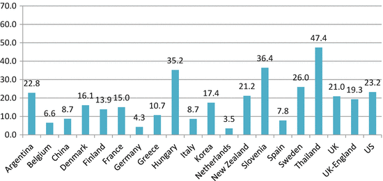
Fig. 3.11
Reported problems with anxiety/depression (% of any problem)
Table 3.4 summarizes the results for reported problems across the 5 dimensions by regional surveys. These results reflect the total population scores and cannot be compared directly to each other as they reflect the unique age structure within each country.
Table 3.4
Reported problems by five dimensions (% of any problem) – regional surveys
Mobility | Self-care | Usual activities | Pain/discomfort | Anxiety/depression | |
|---|---|---|---|---|---|
Armenia (5 regions) | 27.4 | 14.3 | 30.2 | 65.1 | 53.5 |
Canada (Alberta) | 18.5 | 3.7 | 17.9 | 48.3 | 23.2 |
Japan (3 prefecture) | 7.3 | 1.8 | 5.2 | 20.0 | 8.5 |
Spain-Canary Islands | 17.1 | 6.3 | 14.7 | 39.5 | 25.7 |
Spain – Catalunya | 16.9 | 7.0 | 12.4 | 32.9 | 19.5 |
Sweden – Stockholm county | 11.6 | 2.1 | 10.4 | 45.2 | 32.7 |
Zimbabwe – Harare district | 9.8 | 3.4 | 11.0 | 30.5 | 30.7 |
3.4 EQ-5D Index Population Norms
Tables 3.5, 3.6, and 3.7 summarize key EQ-5D index value population norms by age group for each country, based on different value sets. Table 3.5 shows EQ-5D index values that are based on the European VAS value set scoring algorithm. Table 3.6 shows the available EQ-5D index values that are based on country-specific TTO value sets. Table 3.7 shows the available EQ-5D index values that are based on country-specific VAS value sets.
Table 3.5
EQ-5D index population norms (European VAS value set)
Age | ||||||||
|---|---|---|---|---|---|---|---|---|
18–24 | 25–34 | 35–44 | 45–54 | 55–64 | 65–74 | 75+ | Total | |
National
| ||||||||
Argentina | 0.907 | 0.889 | 0.869 | 0.849 | 0.829 | 0.796 | 0.724 | 0.856 |
Belgium | 0.953 | 0.921 | 0.920 | 0.889 | 0.881 | 0.848 | 0.761 | 0.891 |
China | 0.990 | 0.980 | 0.970 | 0.960 | 0.930 | 0.900 | 0.840 | 0.951 |
Denmark | 0.914 | 0.914 | 0.881 | 0.861 | 0.845 | 0.818 | 0.753 | 0.866 |
Finland | N/A | 0.919 | 0.891 | 0.853 | 0.805 | 0.762 | 0.573 | 0.815 |
France | 0.924 | 0.921 | 0.883 | 0.893 | 0.836 | 0.804 | 0.756 | 0.872 |
Germany | 0.950 | 0.949 | 0.943 | 0.908 | 0.881 | 0.838 | 0.771 | 0.902 |
Greece | 0.979 | 0.972 | 0.957 | 0.916 | 0.817 | 0.793 | 0.739 | 0.913 |
Hungary | 0.934 | 0.911 | 0.873 | 0.802 | 0.755 | 0.716 | 0.639 | 0.823 |
Italy | 0.969 | 0.956 | 0.943 | 0.910 | 0.877 | 0.823 | 0.724 | 0.899 |
Korea | 0.957 | 0.958 | 0.949 | 0.915 | 0.828 | 0.787 | N/A | 0.915 |
Netherlands | 0.938 | 0.910 | 0.922 | 0.874 | 0.869 | 0.863 | 0.798 | 0.892 |
New Zealand | 0.913 | 0.906 | 0.893 | 0.858 | 0.817 | 0.800 | 0.712 | 0.848 |
Slovenia | 0.879 | 0.859 | 0.831 | 0.772 | 0.697 | 0.663 | 0.621 | 0.788 |
Spain | 0.968 | 0.963 | 0.939 | 0.911 | 0.884 | 0.870 | 0.773 | 0.915 |
Sweden | 0.888 | 0.893 | 0.868 | 0.835 | 0.813 | 0.836 | 0.701 | 0.851 |
Thailand | 0.814 | 0.785 | 0.771 | 0.717 | 0.694 | 0.670 | 0.657 | 0.742 |
UK | 0.934 | 0.922 | 0.905 | 0.849 | 0.804 | 0.785 | 0.734 | 0.856 |
UK-England | 0.922 | 0.915 | 0.891 | 0.857 | 0.819 | 0.785 | 0.720 | 0.857 |
US | 0.899 | 0.883 | 0.853 | 0.809 | 0.776 | 0.756 | 0.677 | 0.825 |
Regional
| ||||||||
Armenia (5 regions) | 0.881 | 0.798 | 0.736 | 0.690 | 0.600 | 0.521 | 0.473 | 0.693 |
Canada (Alberta) | 0.879 | 0.960 | 0.944 | 0.905 | 0.937 | 0.931 | 0.868 | 0.925 |
Japan (3 prefectures) | 0.961 | 0.961 | 0.965 | 0.938 | 0.908 | 0.886 | 0.758 | 0.927 |
Spain-Canary Islands | 0.930 | 0.910 | 0.878 | 0.825 | 0.753 | 0.736 | 0.619 | 0.815 |
Spain – Catalunya | 0.958 | 0.929 | 0.914 | 0.871 | 0.807 | 0.762 | 0.623 | 0.853 |
Sweden – Stockholm county | 0.860 | 0.860 | 0.850 | 0.820 | 0.800 | 0.800 | 0.740 | 0.824 |
Zimbabwe – Harare district | 0.867 | 0.859 | 0.774 | 0.750 | 0.697 | 0.607 | N/A | 0.842 |
Table 3.6
EQ-5D index population norms (country-specific TTO value sets)
Age | ||||||||
|---|---|---|---|---|---|---|---|---|
18–24 | 25–34 | 35–44 | 45–54 | 55–64 | 65–74 | 75+ | Total | |
National
| ||||||||
Argentina | 0.951 | 0.936 | 0.919 | 0.898 | 0.874 | 0.835 | 0.756 | 0.902 |
Denmark | 0.928 | 0.927 | 0.901 | 0.882 | 0.870 | 0.847 | 0.794 | 0.887 |
France | 0.948 | 0.946 | 0.913 | 0.922 | 0.853 | 0.810 | 0.735 | 0.892 |
Germany | 0.972 | 0.973 | 0.966 | 0.945 | 0.922 | 0.891 | 0.839 | 0.938 |
Italy | 0.984 | 0.978 | 0.973 | 0.955 | 0.936 | 0.904 | 0.839 | 0.947 |
Korea | 0.981 | 0.982 | 0.976 | 0.960 | 0.909 | 0.888 | 0.958 | |
Netherlands | 0.950 | 0.927 | 0.935 | 0.890 | 0.890 | 0.886 | 0.830 | 0.910 |
Spain | 0.982 | 0.975 | 0.949 | 0.923 | 0.901 | 0.891 | 0.781 | 0.929 |
UK | 0.940 | 0.927 | 0.911 | 0.847 | 0.799 | 0.779 | 0.726 | 0.856 |
UK-England | 0.929 | 0.919 | 0.893 | 0.855 | 0.810 | 0.773 | 0.703 | 0.855 |
US | 0.924 | 0.912 | 0.889 | 0.855 | 0.830 | 0.817 | 0.755 | 0.867 |
Regional
| 18–24 | 25–34 | 35–44 | 45–54 | 55–64 | 65–74 | 75+ | Total |
Japan (3 prefecture) | 0.967 | 0.963 | 0.965 | 0.941 | 0.912 | 0.881 | 0.768 | 0.929 |
Spain-Canary Islands | 0.953 | 0.934 | 0.911 | 0.854 | 0.780 | 0.754 | 0.596 | 0.836 |
Spain – Catalunya | 0.974 | 0.947 | 0.941 | 0.898 | 0.838 | 0.780 | 0.594 | 0.871 |
Zimbabwe – Harare district | 0.848 | 0.841 | 0.793 | 0.785 | 0.756 | 0.661 | 0.833 | |
Table 3.7
EQ-5D index population norms (country-specific VAS value set)
Age | ||||||||
|---|---|---|---|---|---|---|---|---|
18–24 | 25–34 | 35–44 | 45–54 | 55–64 | 65–74 | 75+ | Total | |
National
| ||||||||
Argentina | 0.928 | 0.911 | 0.888 | 0.867 | 0.837 | 0.793 | 0.712 | 0.871 |
Belgium | 0.948 | 0.915 | 0.912 | 0.881 | 0.871 | 0.836 | 0.748 | 0.883 |
Denmark | 0.885 | 0.884 | 0.845 | 0.822 | 0.799 | 0.766 | 0.691 | 0.826 |
Finland | 0.909 | 0.878 | 0.835 | 0.781 | 0.738 | 0.583 | 0.800 | |
Germany | 0.962 | 0.966 | 0.962 | 0.937 | 0.915 | 0.882 | 0.817 | 0.930 |
New Zealand | 0.890 | 0.883 | 0.869 | 0.827 | 0.782 | 0.763 | 0.672 | 0.818 |
Slovenia | 0.869 | 0.841 | 0.794 | 0.712 | 0.619 | 0.554 | 0.498 | 0.738 |
Spain | 0.969 | 0.963 | 0.939 | 0.912 | 0.883 | 0.866 | 0.761 | 0.914 |
UK | 0.931 | 0.920 | 0.902 | 0.846 | 0.799 | 0.778 | 0.726 | 0.852 |
UK-England | 0.922 | 0.914 | 0.888 | 0.854 | 0.814 | 0.775 | 0.706 | 0.853 |
Regional
| 18–24 | 25–34 | 35–44 | 45–54 | 55–64 | 65–74 | 75+ | Total |
Japan (3 prefecture) | 0.885 | 0.884 | 0.845 | 0.822 | 0.799 | 0.766 | 0.691 | 0.826 |
Spain-Canary Islands | 0.934 | 0.916 | 0.886 | 0.834 | 0.765 | 0.740 | 0.617 | 0.821 |
Spain – Catalunya | 0.960 | 0.932 | 0.919 | 0.878 | 0.815 | 0.770 | 0.620 | 0.857 |
Therefore, cross-country differences seen in Tables 3.6 and 3.7 can be due to a mixture of differences in how people in each country report problems along the five dimensions and how different populations value these problems. Total population scores also cannot be compared for the reason that they are not standardized for demographic differences across countries. Regional data are presented using the available national TTO and VAS value sets.